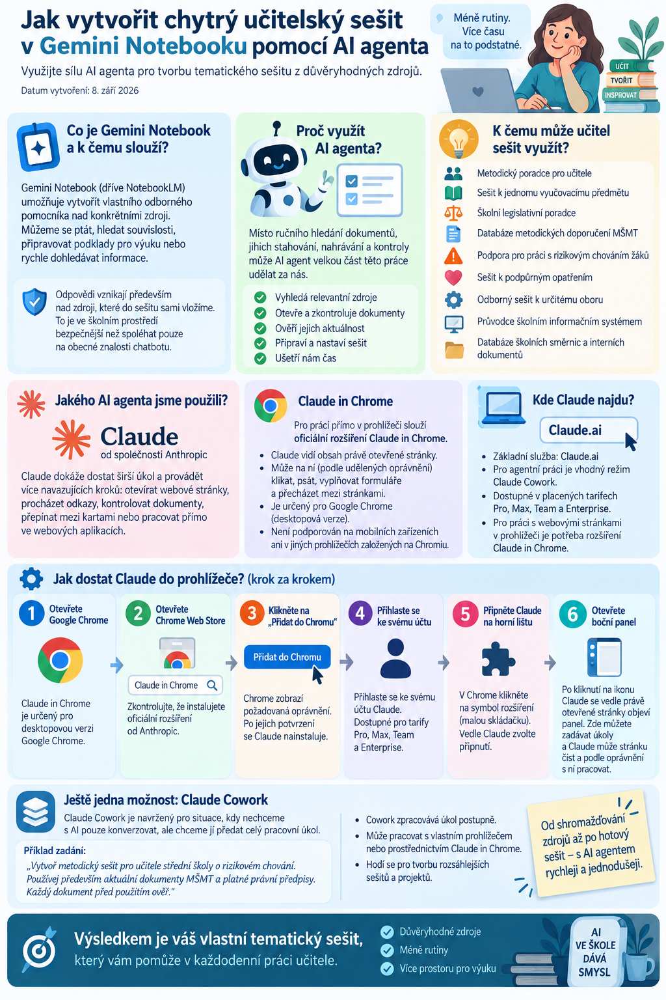

Gemini Notebook, respektive NotebookLM, používám stále častěji jako prostředí, ve kterém si mohu vytvořit vlastního odborného pomocníka nad konkrétními zdroji. Samotné založení sešitu je jednoduché. Mnohem zajímavější ale začíná být situace, kdy přípravu celého sešitu svěříme AI agentovi.
Místo ručního hledání desítek dokumentů, jejich stahování, nahrávání, kontroly a nastavování instrukcí může agent velkou část této práce udělat za nás.
Výsledkem není jen složka dokumentů. Vzniká tematický sešit, nad kterým se můžeme ptát, hledat souvislosti, připravovat podklady pro výuku nebo rychle dohledávat informace.

K čemu takový sešit může učitel použít
Možností je překvapivě hodně.
Může vzniknout například:
- metodický poradce pro učitele,
- sešit k jednomu vyučovacímu předmětu,
- školní legislativní poradce,
- databáze metodických doporučení MŠMT,
- podpora pro práci s rizikovým chováním žáků,
- sešit k podpůrným opatřením,
- odborný sešit k určitému oboru,
- průvodce školním informačním systémem,
- databáze školních směrnic a interních dokumentů.
Velkou výhodou je, že odpovědi vznikají především nad zdroji, které do sešitu sami vložíme.
To je ve školním prostředí podstatně bezpečnější než spoléhat pouze na obecné znalosti chatbotu.
Jakého AI agenta jsme použili
Pro tento pracovní postup jsme využili Claude od společnosti Anthropic a jeho agentní funkce.
Běžný chatbot především odpovídá na otázky. Agent dokáže dostat širší úkol a potom provádět více navazujících kroků: otevřít webové stránky, procházet odkazy, kontrolovat dokumenty, přepínat mezi kartami nebo pracovat přímo ve webových aplikacích.
Pro práci přímo v internetovém prohlížeči slouží Claude in Chrome.
Jde o oficiální rozšíření pro Google Chrome, které umožňuje Claudovi vidět obsah právě otevřené stránky a podle udělených oprávnění na ní také klikat, psát, vyplňovat formuláře nebo přecházet mezi stránkami.
To je zásadní rozdíl.
Místo instrukce:
Najdi mi dokumenty, které bych měla nahrát do NotebookLM.
můžeme agentovi zadat například:
Vyhledej oficiální metodické dokumenty MŠMT k rizikovému chování, každý zdroj otevři, ověř, zda jde o aktuální dokument, a připrav z nich nový tematický sešit.
Agent pak může postupovat webem podobně jako člověk.
Kde Claude najdu
Základní službu Claude najdete na webu Claude.ai.
Pro skutečně agentní práci je zajímavý především režim Claude Cowork, který je určený právě pro vícekrokové pracovní úkoly. Anthropic jej nabízí v placených tarifech Claude a v současnosti jej zpřístupňuje přes webovou aplikaci i desktopovou aplikaci.
Pokud ale chcete, aby Claude pracoval přímo s webovými stránkami otevřenými ve vašem prohlížeči, potřebujete Claude in Chrome.
Jak dostat Claude do prohlížeče
Instalace je podobná jako u jiných rozšíření pro Chrome.
1. Otevřete Google Chrome
Claude in Chrome je určený pro desktopovou verzi Google Chrome.
Anthropic aktuálně upozorňuje, že není podporován na mobilních zařízeních ani v jiných prohlížečích založených na Chromiu.
2. Otevřete Chrome Web Store
Vyhledejte:
Claude in Chrome
Doporučuji vždy zkontrolovat, že instalujete oficiální rozšíření Claude od Anthropic, nikoli jiné rozšíření s podobným názvem.
3. Klikněte na „Přidat do Chromu“
Chrome zobrazí oprávnění, která rozšíření požaduje.
Po jejich potvrzení se Claude nainstaluje do prohlížeče.
4. Přihlaste se ke svému účtu Claude
Po otevření rozšíření vás Claude požádá o přihlášení.
Claude in Chrome je v současnosti dostupný pro placené tarify Pro, Max, Team a Enterprise.
5. Připněte Claude na horní lištu
V Chrome klikněte na symbol rozšíření – malou „skládačku“.
Vedle Claude zvolte připnutí.
Ikona Claude pak zůstane stále viditelná v horní části prohlížeče.
6. Otevřete boční panel
Po kliknutí na ikonu Claude se vedle právě otevřené stránky objeví panel.
Na jedné straně tedy například vidíte NotebookLM a vedle něj svého AI agenta.
A právě zde můžete zadat:
Otevři tento zdroj, zjisti, zda jde o aktuální metodiku, a pokud ano, použij jej při přípravě sešitu.
Claude může stránku číst a podle nastavených oprávnění s ní také pracovat.
Ještě jedna možnost: Cowork
Claude dnes nabízí také režim Cowork, který je pro podobnou práci velmi zajímavý.
Je navržený právě pro situace, kdy nechceme s AI pouze konverzovat, ale chceme jí předat celý pracovní úkol.
Například:
Vytvoř metodický sešit pro učitele střední školy o rizikovém chování. Používej především aktuální dokumenty MŠMT a platné právní předpisy. Každý dokument před použitím ověř.
Cowork potom může jednotlivé části úkolu zpracovávat postupně.
Claude Cowork může pracovat buď s vlastním vestavěným prohlížečem, nebo prostřednictvím Claude in Chrome s vaším běžným Chrome. Vestavěný prohlížeč má jednu zajímavou výhodu: pracuje odděleně od běžných otevřených karet a přihlášení uživatele.
Pro začátečníka bych ale celý princip popsala jednoduše:
Cowork = režim pro předání větší práce
Claude in Chrome = ruce a oči Claude uvnitř vašeho prohlížeče
Pozor na školní účty a citlivá data
Tady bych doporučila určitou opatrnost.
Claude in Chrome není obyčejné rozšíření, které pouze shrnuje text stránky. Dokáže s webem skutečně pracovat.
Pokud jste například přihlášeni do:
- Google Disku,
- Microsoft 365,
- školního informačního systému,
- e-mailu,
- interních školních aplikací,
může se agent dostat k obsahu stránky, ke které mu dáte přístup.
Anthropic samo upozorňuje na bezpečnostní rizika browserových agentů, včetně tzv. prompt injection, kdy se škodlivé instrukce mohou skrývat přímo v obsahu navštívené stránky.
Ve školním prostředí bych proto dodržovala několik jednoduchých pravidel:
- neposkytovat agentovi přístup k osobním údajům žáků,
- nepracovat tímto způsobem s citlivou dokumentací,
- kontrolovat, ke kterým stránkám má Claude oprávnění,
- používat agenta především pro veřejné odborné zdroje,
- důležité kroky před jejich provedením kontrolovat.
Pro podobnou rešerši, jakou jsme dělali při vytváření metodických notebooků, je to ideální: agent pracuje především s veřejnými metodikami, právními předpisy a odbornými stránkami.
Workflow: od nápadu k hotovému sešitu
1. Nejprve určete účel sešitu
Nejdůležitější otázka není:
„Jaké dokumenty tam nahraju?“
Ale:
„S čím mi má tento sešit pomáhat?“
Například:
Chci vytvořit metodického poradce pro učitele, který pomůže při řešení rizikového chování žáků a bude vycházet z oficiálních metodik a platných právních předpisů.
Dobře definovaný účel později pomůže AI agentovi rozhodnout:
- jaké zdroje hledat,
- které zdroje jsou důvěryhodné,
- co do sešitu nepatří,
- jak mají být nastaveny instrukce notebooku.
2. Určete hierarchii zdrojů
Ne všechny internetové zdroje mají stejnou hodnotu.
U školních témat je vhodné předem stanovit, které zdroje mají přednost.
Například:
- platná legislativa,
- ministerstva a další státní instituce,
- oficiální metodiky,
- odborné instituce,
- odborné publikace,
- ostatní ověřené zdroje.
U právních nebo metodických témat bych byla velmi opatrná s blogy, diskusemi nebo články bez jasného autora.
AI agent umí najít obrovské množství materiálů. To ale ještě neznamená, že všechny patří do odborného sešitu.
3. Připravte agentovi přesné zadání
AI agent potřebuje vědět nejen co má hledat, ale také jak má postupovat.
Zadání proto může obsahovat například:
- téma sešitu,
- cílového uživatele,
- požadované typy zdrojů,
- důvěryhodné weby,
- požadavek na ověřování odkazů,
- požadavek na kontrolu aktuálnosti dokumentů,
- pravidla pro vyřazování duplicit,
- požadovaný způsob organizace sešitu.
Agentovi můžeme například zadat:
Tahle část je důležitější, než se může zdát.
Agent totiž jinak velmi ochotně sesbírá spoustu věcí, které vypadají správně, ale po otevření zjistíte, že některý odkaz vede pouze na rozcestník, starší verzi dokumentu nebo úplně jiný soubor.
4. Agent provede rešerši
Tady začíná část práce, která by učiteli ručně zabrala nejvíce času.
Agent může:
- prohledávat web,
- otevírat jednotlivé zdroje,
- hledat originální dokumenty,
- kontrolovat jejich obsah,
- porovnávat verze,
- hledat související dokumenty,
- odstraňovat duplicity.
U většího tématu může vzniknout například několik desítek relevantních zdrojů.
A právě tady začíná být agent skutečně užitečný.
Není to jen chatbot, který odpovídá na otázku. Dokáže projít celý pracovní postup.
5. Každý zdroj je potřeba ověřit
Tohle je krok, který bych rozhodně nepřeskakovala.
U našich sešitů jsme požadovali, aby agent každý zdroj skutečně otevřel.
Kontrolujeme například:
- zda URL funguje,
- zda jde opravdu o očekávaný dokument,
- zda dokument není zastaralý,
- zda nejde o jinou verzi,
- zda PDF obsahuje skutečný text dokumentu,
- zda není dokument pouze příloha bez potřebného kontextu.
Pokud jde o legislativu, je vhodné kontrolovat také aktuální znění.
AI může při rešerši udělat chybu stejně jako člověk.
Rozdíl je pouze v tom, že ji dokáže udělat mnohem rychleji a ve větším množství.
Automatizujeme práci, ne odpovědnost.
6. Agent vytvoří sešit
Jakmile jsou zdroje připravené, může agent přejít přímo do Gemini Notebooku / NotebookLM a vytvořit nový sešit.
Následně:
- založí sešit,
- pojmenuje ho,
- vloží ověřené zdroje,
- odstraní případné chybné importy,
- zkontroluje, zda byly zdroje správně načtené.
U větších sešitů doporučuji udržovat jasnou tematickou hranici.
Je lákavé vytvořit jeden obrovský „školní notebook na všechno“.
V praxi ale bývá lepší mít několik menších odborných sešitů.
Například:
- legislativa školy,
- rizikové chování,
- podpůrná opatření,
- Bakaláři,
- metodika hodnocení,
- konkrétní vyučovací předmět.
7. Nastavte instrukce sešitu
Toto je podle mě jedna z nejdůležitějších částí celého workflow.
Notebook nemusí být pouze vyhledávač dokumentů.
Můžeme mu určit, jakou roli má plnit.
Například:
Můžeme také určit:
- styl odpovědí,
- míru podrobnosti,
- cílovou skupinu,
- strukturu doporučení,
- způsob práce s citacemi,
- upozorňování na nejistotu.
Dobré instrukce z obyčejné databáze dokumentů udělají skutečného tematického poradce.
8. Sešit otestujte
Hotový notebook ještě nemusí být dobrý notebook.
Proto mu položte několik typických otázek, které budete později skutečně používat.
Například:
Co má učitel udělat při podezření na šikanu?
Jaký je rozdíl mezi doporučeným postupem školy a právní povinností?
Který dokument tuto situaci upravuje?
Existují ve zdrojích dvě rozdílná doporučení?
Sledujeme především:
- zda odpověď skutečně vychází ze zdrojů,
- zda notebook správně cituje,
- zda nerozšiřuje odpověď o něco, co ve zdrojích není,
- zda používá aktuální dokument,
- zda správně rozlišuje různé typy zdrojů.
Pokud se objeví problém, můžeme upravit zdroje nebo instrukce.
9. Myslete také na aktualizaci
Tohle je část, na kterou se při vytváření podobných systémů často zapomíná.
Dokument, který je správný dnes, nemusí být správný za rok.
Proto je dobré už při tvorbě notebooku vytvořit jednoduché pravidlo údržby.
Například:
Jednou za tři měsíce zkontroluj všechny internetové zdroje a zjisti, zda nebyla vydána novější verze dokumentu.
Nebo:
Porovnej seznam zdrojů notebooku s aktuálními dokumenty zveřejněnými na webu MŠMT.
Právě tady se znovu velmi dobře uplatní AI agent.
Nemusí celý notebook vytvářet znovu. Může pouze kontrolovat změny.
Jednoduchý model celého procesu
↓
Definice účelu
↓
Pravidla pro zdroje
↓
Claude / AI agent
↓
Rešerše a ověření zdrojů
↓
Gemini Notebook / NotebookLM
↓
Nastavení instrukcí
↓
Testovací otázky
↓
Používání
↓
Pravidelná aktualizace
Co na tomto způsobu práce považuji za nejzajímavější
Největší změnou podle mě není samotný Gemini Notebook.
Zajímavější je propojení notebooku s AI agentem.
Notebook se stará o práci se znalostmi.
Agent se stará o práci kolem něj.
Může vyhledávat, kontrolovat, porovnávat, organizovat a aktualizovat zdroje.
Učitel potom nemusí trávit hodiny technickou přípravou systému a může se soustředit na to nejdůležitější: co od svého odborného pomocníka vlastně potřebuje.
Kde bych byla opatrná
Ani tento postup není bez rizik.
AI agent může:
- vybrat chybný dokument,
- přehlédnout novější verzi,
- špatně interpretovat stránku,
- zaměnit metodické doporučení za právní povinnost,
- vložit duplicitu,
- pracovat s neaktuálním zdrojem.
Proto bych u důležitých školních témat vždy zachovala lidskou kontrolu.
Zvlášť u:
- legislativy,
- GDPR,
- podpůrných opatření,
- bezpečnosti žáků,
- pracovněprávních otázek,
- krizových situací.
AI je zde výborný pomocník.
Neměla by ale být posledním článkem rozhodování.
Praktický závěr
Pokud už NotebookLM nebo Gemini Notebook používáte, zkuste příště nezačínat ručním nahráváním dokumentů.
Nejprve si napište:
„Jakého odborného pomocníka bych chtěl vytvořit?“
Potom nechte AI agenta připravit podklady, ověřit zdroje a notebook sestavit.
Pro začátek potřebujete v zásadě jen tři věci:
Právě spojení AI agenta + ověřených zdrojů + tematického notebooku může být pro učitele mnohem zajímavější než samotné používání běžného chatbotu.
A možná je to také dobrá ukázka toho, kam se práce s AI ve škole postupně posouvá.
Ne od jednotlivých promptů.
Ale k promyšleným pracovním postupům.